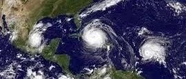

美国国家科学基金投资300万美元建立CONVERGE中心
美NSF投资300万美元建立CONVERGE中心以加强对自然灾害的研究
美国科罗拉多州博尔德市
2018年11月14日
原文发布于
https://www.designsafe-ci.org/community/news/2018/november/nsf-creates-3m-converge-center-augment-natural-hazards-research/
赵鹏举 译

图片由美国国家海洋和大气管理局（NOAA）提供
为了增加自然灾害研究的多样性，美国国家科学基金会最近在科罗拉多大学博尔德分校投资300万美元建立了一个研究中心。该中心是自然灾害工程研究基础设施（Natural Hazards Engineering Research Infrastructure，NHERI）的资源，NHERI由美国国家自然科学基金会资助且含有11个成员。
（译者注：NHERI 是一个分布式的、多用户的国家设施，为自然灾害工程社区提供最先进的研究用的基础设施。由美国国家科学基金会资助，NHERI使研究人员能够探索和测试突破性的概念，以保护民宅、企业和基础设施生命线免受地震、风灾和水灾的影响，使创新能够有助于防止自然灾害成为社会灾害。译自：https://www.designsafe-ci.org/about/）
作为NSF的10大创意之一，“convergence”一词描述的是科学学科之间以一种协调的、互惠的方式进行融合，正是这种融合促进了成功的研究所需要的强有力的合作。对于NSF来说，“convergence”研究是由一个引人注目的问题驱动的，这个问题可以通过学科间的深度合作来解决。
（译者注：NSF的十大创意（NSF’S TEN BIG IDEAS）包括“Future of Work at the Human-Technology Frontier/人类技术的前沿性工作的未来”、“Harnessing the Data Revolution/驾驭数据革命”、“Growing Convergence Research/日趋融合的研究”等十个创意。自2017年以来，NSF一直在通过开创性的研究和试点活动，为“十大创意”奠定基础。到2019年，国家科学基金会将在每个大创意上投资3000万美元，并继续为美国在服务国家未来的大创意上的领导地位寻找和支持新的机会。详情请参阅：https://www.nsf.gov/news/special_reports/big_ideas/）
CONVERGE中心将建立和支持研究伙伴关系和创造性思维，以解决由自然灾害、不可持续发展和日益加剧的经济不平等造成的复杂问题。
“作为一种资源，CONVERGE中心在NSF的支持下，通过协调社区组织的各种救援小组，使得NHERI用户的努力更有成效，” NHERI网络协调办公室主任Julio Ramirez如此表示，他还是美国普渡大学土木工程领域的Karl H. Kettelhut教授。
加强NSF对自然灾害研究的支持
Lori Peek，社会学教授，科罗拉多大学博尔德分校自然灾害中心主任，是CONVERGE中心的首席研究员。她说，该设施符合美国国家科学基金会融合研究的目标，也符合NHERI的使命，即提高美国民用基础设施的韧性以抵御自然灾害。

Lori Peek，首席研究员，CONVERGE中心
该中心致力于工程学、社会科学和跨学科团队之间的融合，以减少灾害造成的损失和提高社会福利。Peek 说，降低风险和增强灾后可恢复性这一目标是NHERI使命的核心，CONVERGE中心将通过专注于研究之间的协作和协调来帮助推进这一目标。
“Convergence科学就是把不同的人、不同的观点和不同的技能汇集在一起，来解决世界上最严峻的挑战，” Peek说，“ CONVERGE中心将使我们能够联系各个研究团体，使我们能够为研究的伦理行为发展和共享最佳的准则，使我们能够促进社会科学、工程学和跨学科的自然灾害研究，以减少易损性。”
广泛的目标
CONVERGE中心作为更广泛的社会科学和工程社区的资源。Peek解释说：“我们正在进行几项关键任务，旨在推进更广泛的研究事业。”这些任务包括：
创建有史以来的第一个救援领导团队，包括岩土、社会科学和结构工程极端事件监测（EER）网络和相关NHERI设施的领导人。该领导团队将为救援研究人员和研究小组开发社区驱动的最佳实践指导，并将帮助他们在重大灾害发生时建立与媒体、地方、州和联邦政府官员之间的有效通信协议。
通过社会科学极端事件研究（SSEER）和跨学科科学与工程极端事件研究（ISEEER）网络，来确定、联系和协调社会科学研究人员和跨学科研究团队。
为首次接触灾害和灾难研究领域的学生和研究人员开发一系列培训模块和研究简报。
通过着重于研究过程的大众化，并从历史中的弱势群体中吸纳研究人员，来资助社会科学和跨学科的快速响应研究团队。
与位于得克萨斯大学奥斯汀分校（University of Texas-Austin）的NHERI DesignSafe 信息化平台合作，开发一种全新的聚焦于自然灾害和灾难的新型社会科学数据模型，用于管理、发布和共享公开数据。这将作为社会科学研究工具、数据收集和采样协议以及数据集的中央存储库。
与位于华盛顿大学的NHERI RAPID 设施合作，推进社会科学研究和用于跨学科领域监测的移动应用开发。
与位于普渡大学的NHERI网络协调办公室（NHERI Network Coordination Office）合作，帮助培养下一代的研究人员和科学家，他们将聚焦于减轻民用基础设施在自然灾害下遭受的危害，并扩大当下和未来NHERI用户的努力的影响。
将社会科学家和工程师联系起来
社会科学家长期以来一直与个人、家庭、组织和整个社区一起进行减灾和灾后研究。这些研究取得了根本性的突破，帮助推进了政策和应急管理措施的制定，并最终拯救了大量生命。
作为一名社会科学家，Peek在她的职业生涯中一直与工程师合作。例如，她最近刚结束与一个大型跨学科团队的合作，该团队为美国开发了校园自然灾害安全指导。
“如果没有跨学科的合作，这个项目是不可能的，”她说，“工程师们教会了我们的团队如何确保孩子们上学时使用的学校设施是安全的，而社会科学家们则提供了有关学校间的社会差异的知识，这些社会差异可能会促进或削弱对所建议的保护措施的采用。”
在这样一个气候变化和社会经济不平等日益加剧的时代，灾害正变得越来越严重。Peek说:“作为社会科学家和工程师，我对CONVERGE中心的愿景是让我们这些社会科学家和工程师走到一起，来看看我们如何扭转潮流，减少这些极端事件带来的伤害和痛苦。”
不久，CONVERGE中心将发布社会科学极端事件（SSEER）地图和一系列快速响应的研究简报。目前，该小组正在进行有史以来第一次社会科学领域的进行灾害和灾难研究的科研人员的普查。在这里了解更多关于这些努力的信息。
团队
CONVERGE中心位于科罗拉多大学博尔德分校的自然灾害中心，该自然灾害中心是美国最古老的学术型的社会科学和多学科灾害研究中心之一。自然灾害中心团队的成员们正在帮助CONVERGE中心起步。今后，该中心将聘用两名博士后学者，并为各种咨询委员会确定成员。
CONVERGE中心还包括与科罗拉多大学博尔德分校环境新闻中心的合作。此外，CONVERGE团队还将与比尔•安德森基金（Bill Anderson Fund）和国家科学基金会资助的少数民族涌现计划（NSF-funded Minority SURGE program）合作，以确保来自历史中弱势群体的新兴学者能参与未来的监测工作。
联系方式
CONVERGE
Lori Peek，首席研究员，CONVERGE
社会学教授，科罗拉多大学博尔德分校自然灾害中心主任
NHERI
Julio Ramirez，NHERI网络协调办公室主任
美国普渡大学土木工程领域Karl H. Kettelhut教授
NSF
Sarah Bates，NSF公共事务专家
703-292-7738
---------End---------

本文翻译：赵鹏举
相关研究
长按识别二维码，关注我们的科研动态